Nomeado aos 19 anos para a liderança do PPB
Em 14/12/2000, Flávio Bolsonaro foi nomeado assistente técnico de gabinete no gabinete do líder do PPB, o partido do pai, na Câmara dos Deputados, em Brasília.
Em dezembro de 2000, aos 19 anos, Flávio Bolsonaro foi nomeado para um cargo na liderança do PPB, o partido do pai, na Câmara dos Deputados. A Câmara informou à BBC que esse tipo de cargo não pode ser exercido fora de Brasília. No mesmo período, segundo o currículo que ele mesmo publicou, Flávio cursava Direito e estagiava na Defensoria Pública, no Rio.
Esta página mostra documentos públicos, com o trecho que importa marcado, e o que a BBC News Brasil apurou em 2019. Procurado na época, Flávio não quis responder.
Outros guias neste site: A denúncia das rachadinhas e Por que o STF declarou Moro parcial.
Cargo na Câmara, em Brasília, de dezembro de 2000 a junho de 2002. Faculdade de Direito no Rio, de 2000 a 2006. Estágio na Defensoria Pública, no Rio, de agosto de 2000 a outubro de 2001, segundo o perfil na Alerj, ou de março de 2001 a janeiro de 2002, segundo o LinkedIn. As três atividades se sobrepõem de dezembro de 2000 a outubro de 2001.
Em 14/12/2000, Flávio Bolsonaro foi nomeado assistente técnico de gabinete no gabinete do líder do PPB, o partido do pai, na Câmara dos Deputados, em Brasília.
Na mesma data, a Câmara exonerou do mesmo cargo, no mesmo gabinete, Ana Cristina Siqueira Valle, então mulher de Jair Bolsonaro. Ela estava no posto desde novembro de 1998.
O Ato da Mesa nº 45, de 1996, lista 15 tarefas para o cargo, como acompanhar as reuniões do plenário e das comissões e orientar os deputados nas votações.
A Câmara informou à BBC que esses cargos “não possuem a prerrogativa de exercerem suas atividades em outra cidade além da capital federal”. Segundo a reportagem, o cargo era de 40 horas por semana.
Fonte: BBC News Brasil, 23/1/2019
O perfil oficial de Flávio na Alerj lista o curso de Direito na Candido Mendes e um estágio na Defensoria Pública do Rio de agosto de 2000 a outubro de 2001. O cargo na Câmara não aparece.
Ex-professores e ex-colegas contaram à BBC que o curso tinha de 4 a 5 horas de aula por dia nos dois primeiros anos, com presença controlada por chamada. O diploma que ele publicou é do campus Centro, no Rio.
Fonte: BBC News Brasil, 23/1/2019
Segundo a declaração de Imposto de Renda que ele entregou à Justiça Eleitoral, o cargo rendeu R$ 56.548,63 em 2001: cerca de R$ 4.712 por mês, ou R$ 13,5 mil por mês em valores de janeiro de 2019.
Fonte: BBC News Brasil, 23/1/2019
Em 2019, a assessoria de Flávio disse à BBC que não iria responder às perguntas sobre o cargo.
Fonte: BBC News Brasil, 23/1/2019
De dezembro de 2000 a outubro de 2001, as três atividades se sobrepõem: 40 horas por semana em Brasília, aula todo dia e estágio duas vezes por semana no Rio, a mais de 1.000 km. Os documentos não mostram onde ele estava a cada dia. Mas ser nomeado e pago por um cargo que só podia ser exercido em Brasília, enquanto o próprio currículo o coloca no Rio, é o que se costuma chamar de funcionário fantasma.
Cargo de 40 horas por semana. As tarefas são no plenário, nas comissões e nas votações.
Aula de 4 a 5 horas por dia na Candido Mendes, no Centro. Estágio na Defensoria Pública duas vezes por semana.
Os horários exatos não são públicos, e o quadro não inventa nenhum: mostra só o que as fontes dizem. As 40 horas, a distância, as aulas diárias e o estágio duas vezes por semana estão na reportagem da BBC, que ouviu a Câmara, a Defensoria, ex-professores e ex-colegas. Na Câmara, a presença de Flávio era registrada numa folha mensal enviada pela chefia da liderança do PPB, e não em ponto diário.
Todos são públicos e podem ser conferidos no original. Toque num documento para ampliar.
Os atos de pessoal saem no Diário da Câmara e são reproduzidos no Boletim Administrativo, que a Câmara mantém no próprio site. O trecho em amarelo é o que importa; os links levam ao original.
Flávio Nantes Bolsonaro é nomeado para o cargo de assistente técnico de gabinete (CNE-09) no gabinete do líder do Partido Progressista Brasileiro (PPB), na Câmara dos Deputados. O ato é de 14/12/2000 e saiu no Diário da Câmara de 15/12/2000. Ele tinha 19 anos.
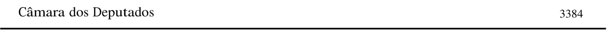
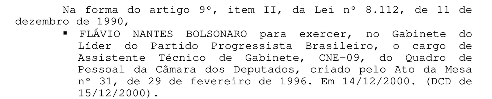

Fonte: Boletim Administrativo da Câmara nº 246, de 27/12/2000, p. 3384
FLÁVIO NANTES BOLSONARO para exercer, no Gabinete do Líder do Partido Progressista Brasileiro, o cargo de Assistente Técnico de Gabinete, CNE-09, do Quadro de Pessoal da Câmara dos Deputados, criado pelo Ato da Mesa nº 31, de 29 de fevereiro de 1996. Em 14/12/2000. (DCD de 15/12/2000).
Na mesma data, Ana Cristina Siqueira Valle, então mulher de Jair Bolsonaro, é exonerada do mesmo cargo, no mesmo gabinete: assistente técnico de gabinete, CNE-09, na liderança do PPB. Os dois atos estão no mesmo boletim.
A BBC escreveu que ela deixou o cargo uma semana antes da chegada de Flávio. Nos atos publicados, a exoneração dela e a nomeação dele têm a mesma data, 14/12/2000.
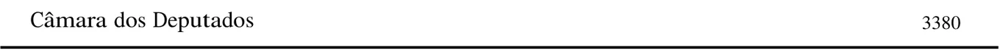
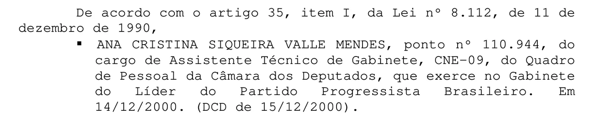
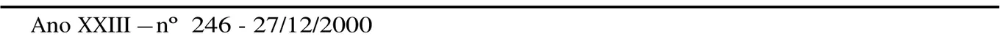
Fonte: Boletim Administrativo da Câmara nº 246, de 27/12/2000, p. 3380
Exonerar, […] De acordo com o artigo 35, item I, da Lei nº 8.112, de 11 de dezembro de 1990, ANA CRISTINA SIQUEIRA VALLE MENDES, ponto nº 110.944, do cargo de Assistente Técnico de Gabinete, CNE-09, do Quadro de Pessoal da Câmara dos Deputados, que exerce no Gabinete do Líder do Partido Progressista Brasileiro. Em 14/12/2000. (DCD de 15/12/2000).
Ana Cristina Siqueira Valle é nomeada para o mesmo cargo, no gabinete do líder do PPB, em 10/11/1998. Ficou nele até a nomeação de Flávio.
Contratar parentes ainda era permitido. A proibição veio em 2008, com uma súmula do STF.
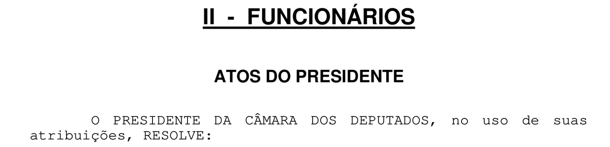
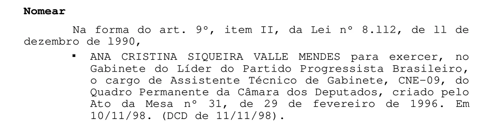
Fonte: Boletim Administrativo da Câmara nº 215, de 13/11/1998, p. 3197
Nomear. Na forma do art. 9º, item II, da Lei nº 8.112, de 11 de dezembro de 1990, ANA CRISTINA SIQUEIRA VALLE MENDES para exercer, no Gabinete do Líder do Partido Progressista Brasileiro, o cargo de Assistente Técnico de Gabinete, CNE-09, do Quadro Permanente da Câmara dos Deputados, criado pelo Ato da Mesa nº 31, de 29 de fevereiro de 1996. Em 10/11/98. (DCD de 11/11/98).
O Ato da Mesa nº 45, de 1996, define as tarefas de cada cargo em comissão da Câmara. Para o assistente técnico de gabinete são 15, entre elas acompanhar as reuniões do plenário e das comissões, orientar os deputados nas votações e acompanhar o resultado das votações. O mesmo ato diz onde esse cargo existe: “na administração e nas lideranças” da Câmara.
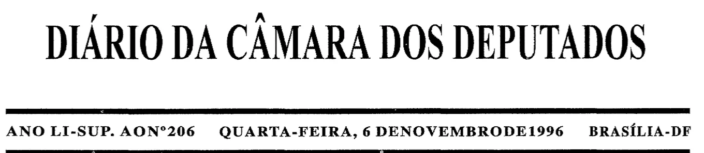
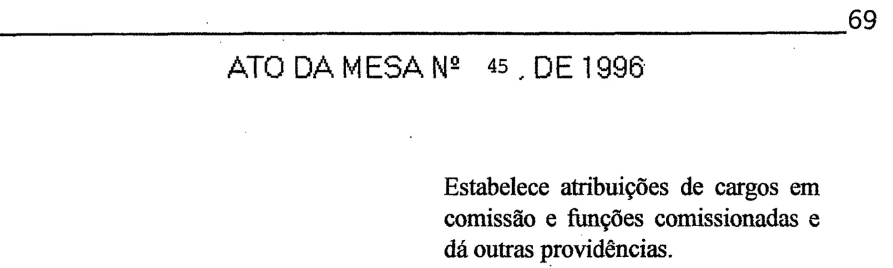
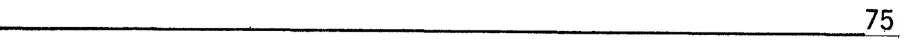
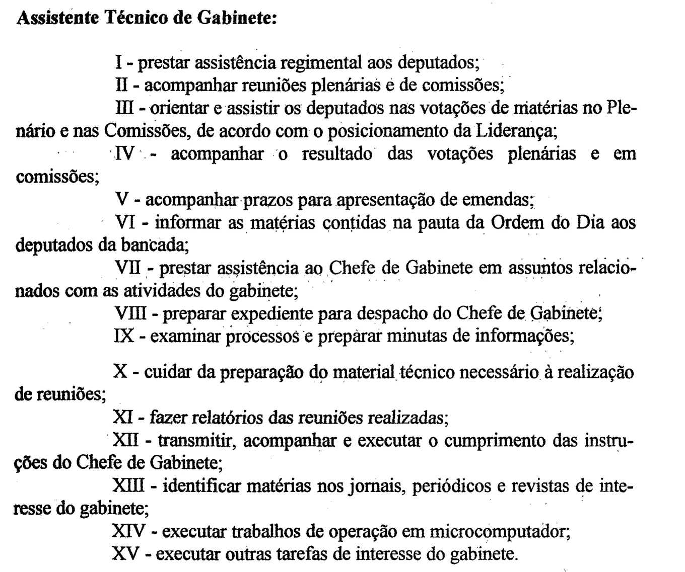
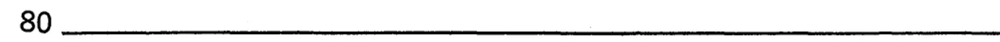
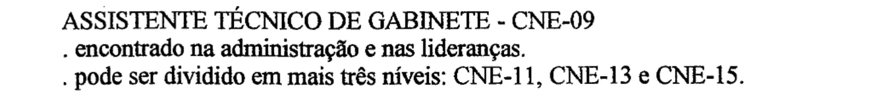
Fonte: Diário da Câmara dos Deputados, suplemento de 6/11/1996, pp. 69, 75 e 80
Assistente Técnico de Gabinete: I - prestar assistência regimental aos deputados; II - acompanhar reuniões plenárias e de comissões; III - orientar e assistir os deputados nas votações de matérias no Plenário e nas Comissões, de acordo com o posicionamento da Liderança; IV - acompanhar o resultado das votações plenárias e em comissões; V - acompanhar prazos para apresentação de emendas; VI - informar as matérias contidas na pauta da Ordem do Dia aos deputados da bancada; VII - prestar assistência ao Chefe de Gabinete em assuntos relacionados com as atividades do gabinete; VIII - preparar expediente para despacho do Chefe de Gabinete; IX - examinar processos e preparar minutas de informações; X - cuidar da preparação do material técnico necessário à realização de reuniões; XI - fazer relatórios das reuniões realizadas; XII - transmitir, acompanhar e executar o cumprimento das instruções do Chefe de Gabinete; XIII - identificar matérias nos jornais, periódicos e revistas de interesse do gabinete; XIV - executar trabalhos de operação em microcomputador; XV - executar outras tarefas de interesse do gabinete. […] (p. 80) ASSISTENTE TÉCNICO DE GABINETE - CNE-09. Encontrado na administração e nas lideranças. Pode ser dividido em mais três níveis: CNE-11, CNE-13 e CNE-15.
Aqui quem fala é o próprio Flávio: o perfil oficial de deputado estadual, o diploma que ele publicou e o perfil divulgado pelo Senado quando ele assumiu o mandato.
No perfil oficial de deputado estadual, arquivado em 30/1/2019, Flávio lista o curso de Direito na Candido Mendes e um estágio na Defensoria Pública do Rio, no Núcleo de Sistema Penitenciário, de agosto de 2000 a outubro de 2001. Entre os cargos exercidos, só aparecem os mandatos na Alerj. O cargo na Câmara não está lá.
O mesmo perfil cita uma pós-graduação em Ciências Políticas pela UFRJ. Em agosto de 2026, a UFRJ disse não ter registro dele como aluno, e a campanha chamou a informação de “equívoco”.
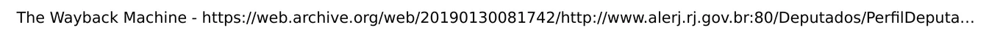
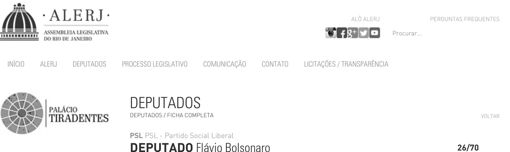
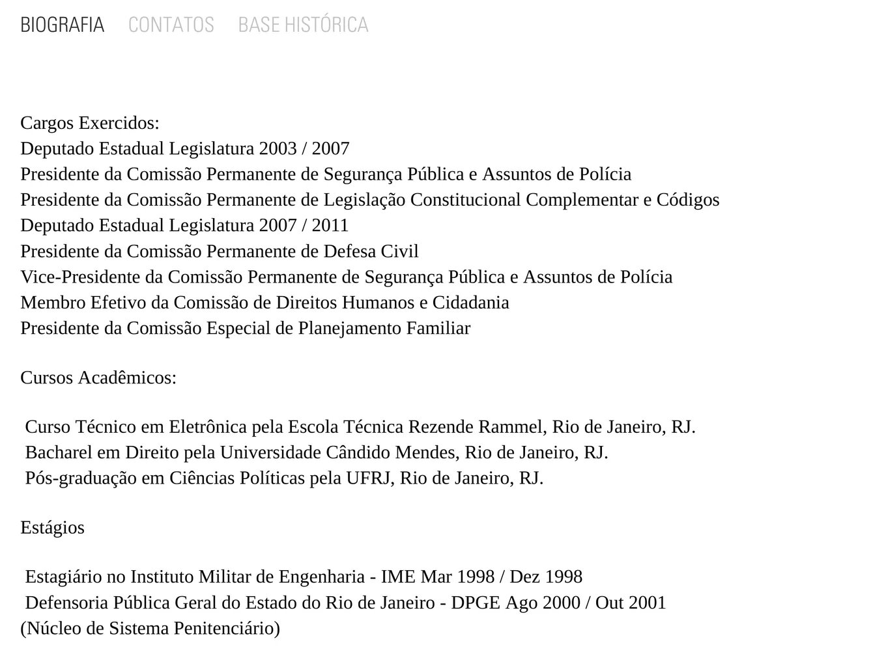
Fonte: Perfil de Flávio Bolsonaro no site da Alerj, cópia do Wayback Machine de 30/1/2019
Cargos Exercidos: Deputado Estadual Legislatura 2003 / 2007 […] Deputado Estadual Legislatura 2007 / 2011 […]. Cursos Acadêmicos: Curso Técnico em Eletrônica pela Escola Técnica Rezende Rammel, Rio de Janeiro, RJ. Bacharel em Direito pela Universidade Cândido Mendes, Rio de Janeiro, RJ. Pós-graduação em Ciências Políticas pela UFRJ, Rio de Janeiro, RJ. Estágios: Estagiário no Instituto Militar de Engenharia - IME Mar 1998 / Dez 1998. Defensoria Pública Geral do Estado do Rio de Janeiro - DPGE Ago 2000 / Out 2001 (Núcleo de Sistema Penitenciário).
Em 12/8/2026, Flávio publicou seus diplomas no X. O de Direito, da Universidade Candido Mendes, é do campus Centro, no Rio, com o curso concluído em 8/2/2006. Segundo a BBC, ele começou o curso em 2000.
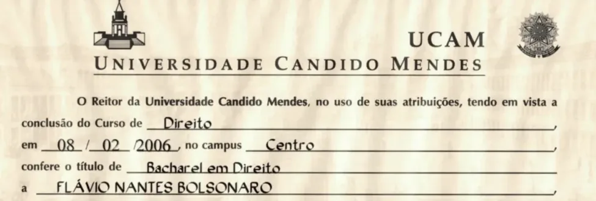
Fonte: Diploma publicado por Flávio Bolsonaro no X em 12/8/2026
O Reitor da Universidade Candido Mendes, no uso de suas atribuições, tendo em vista a conclusão do Curso de Direito em 08/02/2006, no campus Centro, confere o título de Bacharel em Direito a FLÁVIO NANTES BOLSONARO […]
Às vésperas da posse como senador, a Agência Senado o apresentou como “bacharel em direito e pós-graduado em ciências políticas”. O texto não diz a instituição; no perfil da Alerj, a pós em Ciências Políticas aparece como da UFRJ. Em 12/8/2026, a UFRJ disse não ter registro dele como aluno, e o texto do Senado foi corrigido.
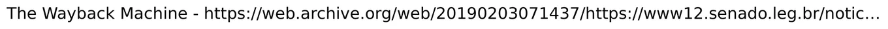
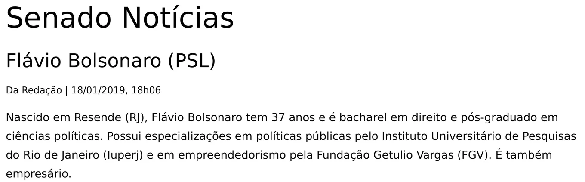
Fonte: Agência Senado, 18/1/2019, cópia do Wayback Machine de 3/2/2019
Nascido em Resende (RJ), Flávio Bolsonaro tem 37 anos e é bacharel em direito e pós-graduado em ciências políticas. Possui especializações em políticas públicas pelo Instituto Universitário de Pesquisas do Rio de Janeiro (Iuperj) e em empreendedorismo pela Fundação Getulio Vargas (FGV). É também empresário.
Respostas curtas, cada uma com o documento que a sustenta. Copie e cole, ou compartilhe o link.
A nomeação está no Boletim Administrativo da Câmara nº 246, de 27/12/2000, página 3384, com data de 14/12/2000. O boletim está no site da própria Câmara. O currículo da Alerj e o diploma são do próprio Flávio.
documentado Base: Boletim Administrativo da Câmara nº 246, de 27/12/2000, p. 3384.
A Câmara informou à BBC que esses cargos “não possuem a prerrogativa de exercerem suas atividades em outra cidade além da capital federal”. Quem pode trabalhar na base eleitoral é outro cargo, o de secretário parlamentar. E as tarefas do cargo são acompanhar o plenário e as comissões e orientar os deputados nas votações.
reportagem Base: resposta da Câmara à BBC News Brasil e Ato da Mesa nº 45, de 1996.
Quem diz que estudava é o próprio Flávio. O perfil dele na Alerj lista o curso de Direito e um estágio na Defensoria de agosto de 2000 a outubro de 2001. Em 2008, num discurso na Alerj, ele disse: “Fiquei cinco anos estudando na faculdade de direito da Candido Mendes, aqui, no centro da cidade”.
documentado Base: perfil de Flávio na Alerj, de 2019, e discurso dele na Alerj em 2008, citado pela BBC.
Em 2000, era. A proibição veio em 2008, com uma súmula do STF. A questão aqui é outra: o cargo só podia ser exercido em Brasília, e ele estava matriculado num curso com aula todo dia no Rio.
reportagem Base: BBC News Brasil e Boletim Administrativo da Câmara nº 246.
O estágio é o de menos. A faculdade tinha aula todo dia, com chamada, e o cargo era de 40 horas por semana em Brasília, a mais de 1.000 km, segundo a BBC.
reportagem Base: BBC News Brasil, 23/1/2019.
17/10/1996O Ato da Mesa nº 45 define as tarefas dos cargos em comissão da Câmara, entre eles o de assistente técnico de gabinete.
10/11/1998Ana Cristina Siqueira Valle, então mulher de Jair Bolsonaro, é nomeada para o cargo na liderança do PPB.
2000Flávio começa o curso de Direito na Universidade Candido Mendes, no Centro do Rio.
Agosto de 2000Começa o estágio na Defensoria Pública do Rio, segundo o perfil dele na Alerj.
14/12/2000Ana Cristina sai do cargo e Flávio, aos 19 anos, é nomeado para ele.
2001O cargo rende R$ 56.548,63 no ano, segundo a declaração de Imposto de Renda dele.
Março de 2001 a janeiro de 2002Período do estágio no LinkedIn dele, segundo a BBC. É outra data, mas também dentro do tempo do cargo.
Outubro de 2001Fim do estágio, segundo o perfil da Alerj.
Junho de 2002Flávio deixa o cargo, a pedido. Meses depois, é eleito deputado estadual pelo PPB.
8/2/2006Conclui o curso de Direito, segundo o diploma.
2008Uma súmula do STF proíbe a contratação de parentes em cargos de confiança.
23/1/2019A BBC News Brasil publica a reportagem. A assessoria de Flávio diz que não vai responder.
12/8/2026A UFRJ diz não ter registro da pós citada nos perfis dele. O texto do Senado é corrigido, e Flávio publica seus diplomas no X.
Procurada pela BBC News Brasil, afirmou que não iria responder aos questionamentos.
Fonte: BBC News Brasil, 23/1/2019
Não respondeu até a publicação da reportagem.
Fonte: BBC News Brasil, 23/1/2019
“Fiquei cinco anos estudando na faculdade de direito da Candido Mendes, aqui, no centro da cidade, dentre esses cinco anos, dois dedicados à prática forense, mais algumas centenas de horas de atividades extracurriculares, muito sacrifício, muita dedicação.”
Fonte: BBC News Brasil, 23/1/2019
“Lembro com bastante carinho do meu período na Defensoria Pública, no início da faculdade, aprendi muito, fiz muitos amigos.”
Fonte: BBC News Brasil, 23/1/2019
Não há registro de que Flávio tenha atuado formalmente no órgão. Um defensor do núcleo de sistema penitenciário, que não quis se identificar, disse que Flávio foi seu estagiário voluntário duas vezes por semana, sem bolsa, controle de frequência ou carga mínima, e que era “assíduo e interessado”.
Fonte: BBC News Brasil, 23/1/2019
Os cargos de natureza especial, como o de Flávio, “têm por finalidade a prestação de serviços de assessoramento aos órgãos da Casa, em Brasília. Desse modo, não possuem a prerrogativa de exercerem suas atividades em outra cidade além da capital federal”.
Fonte: BBC News Brasil, 23/1/2019
Atribuiu a informação a “erros ou equívocos”, possivelmente tirados da Wikipédia, e disse que pediu as correções.
Fonte: Band, 12/8/2026
Disse que publicava os diplomas “para que não restem dúvidas” sobre a formação acadêmica dele.
Fonte: Poder360, 13/8/2026
Os atos da Câmara, o perfil da Alerj, o texto do Senado e o diploma aparecem aqui em recortes, com o trecho marcado em amarelo; o marca-texto é nosso. As cópias do Wayback Machine guardam as páginas como elas estavam em 2019. Da reportagem da BBC, só há citações curtas, com link.